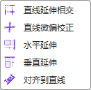
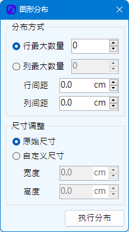

Ribbon菜单PPT助手中如下图所示部分可对PPT对象设置标题样式及位置格式刷操作等四项操作。

转平滑曲线功能将通过PowerPoint绘制的多段线对象的节点作为控制点生成平滑曲线，可以节省逐个节点设置平滑的工作。转为折线则为上诉功能的逆向操作，直接将控制点还原为节点。相互转换之间，对象原来的节点是保持不变的。
本功能包含四项子功能，直线正交延伸、直线微偏校正、图形对象的水平延伸及垂直延伸。本功能设置的应用场景之一为，手动绘制流程图、组织架构图等，需要将绘制的直线对齐，以及将内容框对齐到直线等操作。

直线正交延伸，要求选择2个通过PowerPoint绘图界面直线绘制的图形，且两个对象要成正交关系。以上条件达成，程序会将两条直接延伸至相交。
直线微偏校正，依然要求选择直线对象，当直线对象轻微偏离水平方向或者轻微偏离垂直方向，程序会将直线校正到水平方向或者垂直方向。微偏程度设定为直线两端的水平或垂直偏差距离与直线长度之比小于5%时，认定为微偏。
图形的水平延伸与垂直延伸，要求选择两个图形对象，程序会将先选择的图形延伸到后选择的图形的边界。注意选择顺序的不同，确定了延伸方式的不同。需要说明的是，程序只是简单的将图形的宽度、高度属性做了修改，对于矩形这类图形而言，延伸效果更好。
关于延伸操作的特别说明：
本程序可将选中的图形延伸至幻灯片页面的边缘。设计的使用场景为，当需要绘制一些图形，这些图形需要它延伸至幻灯片的边界，作为部分的背景覆盖时；或者更改了幻灯片文档的页面尺寸，导致原来设计的覆盖至边界的图形并没有扩展到新页面的边界等情况。使用该功能之前，应打开延伸设置界面，确定需要延伸的边界后，再进行延伸操作。

延伸操作可以设置上下左右任意边界或部分边界的组合。该设置会保存直至退出PowerPoint程序或更改设置。每次开启PowerPoint程序时的默认设置为延伸至右边。
特别申明：本功能Potrace程序代码来源于Github的开源代码，作者：Dalton Spillman，开源地址：https://github.com/daltonks/BitmapToVector，开源协议GPL-3.0。
本功能应用场景为，当需要设计一个文字形状的图形时，或者需要将较小的，并不具备放大条件的位图使用到文档中，希望它更清晰，甚至可以调整它的填充颜色时的情形。本功能的操作界面如下：
本功能主要分为2个部分，一部分是将文字内容转换为矢量图线，另一部分是将图片内容转化为矢量图线。所有的矢量图形最后都以PowerPoint的自由曲线输出。
文字转换步骤
输入文字内容，选择字体及样式，并输入字体大小后，点击创建即可生成文字的矢量图线。字体大小范围为50~300磅。
原则上，程序不设置输入的文字数量，但过长的文字内容可能造成程序出现不能意料的问题，建议每次输入的文字数量不要太多。每次输入的文字会作为一个整体生成图线。
图片转换步骤
本功能可将图片转化为PowerPoint多段线绘制的图形，但在转化为矢量图线前，程序会将图片进行灰度变换，再根据颜色调整值，保留一部分信息，删除一部分信息，然后开始进行矢量转换。本功能适合色彩边界明显，线条清晰的图形，或者黑白二色图形的转换。
支持的图形包括Bmp、Jpg、Png格式的图形。
颜色调整：调整范围1~255。图片通过灰度变换后所有像素颜色值均RGB均相等，如果该值大于设定值，则转换为黑白图片后像素为白色，即忽略信息，小于该值则像素为黑色，保留信息。
忽略杂点：调整范围1~1000。通过程序转矢量的过程中，如果图形面积（像素点数量）小于设定的值，将将忽略该信息。通过调整该值，可以有效减少转换后矢量图形的杂点。如下图：左一为原图，中、右两图均为输出图线，颜色调整值均为5，中图为杂点设置为5，右图杂点设置为50。

关于转矢量图功能特别说明：
该部分包含3类功能：图形分布、图形阵列、圆形阵列。每个功能都有相应的UI设置界面进行操作设置。功能应用场景为：需要整齐排布图形对象时，或者需要通过复制变位设计一些创意的背景图形，或者图文排布时。
该功能针对多图形进行操作，最少需要选择2个对象。分布方式为水平分布或者垂直分布两种。当选择水平分布时，程序根据所选对象的从左至右的顺序排序，按照固定的间距水平排成一行。所有对象的顶端将会对齐。对于垂直分布，也有为类似的操作。
尺寸调整
最大尺寸，即所有所选的图形对象中，选择最大的尺寸（对于水平分布来说是图形宽度，对于垂直分布来说是图形高度），将其他的图形尺寸调整为该尺寸。最小尺寸、平均尺寸均与最大尺寸操作类似。原始尺寸为不调整图形的尺寸。
间距 指两个图形界限矩形之间的间距，可以为负值。
下图展示了水平分布各种类型不一的图形，最终他们的外框边界矩形按照给定的间距排列（第二行图形）。
关于图形分布功能特别说明：
图形阵列为将所选的单一图形进行水平或垂直方向的复制阵列。阵列的方向为水平从左向右，垂直从上至下阵列。间距与图形分布的间距意义相同，指图形界限矩形的间距，可以为负值。
变换选项
变换提供了3种变换类型：大小、角度、波形变换。可以三种变换组合进行或者单一进行。
蜂窝网格
选择一个六边形，将其阵列为蜂窝形状的网格图形。对于阵列蜂窝网格操作时，变换功能将禁用。
下图展示无变换阵列，单一缩放变换阵列以及组合变换阵列：
下图展示蜂窝网格的阵列：

关于图形阵列功能特别说明：

选中一个图形，将其绕指定半径的圆形路径进行复制阵列。圆形路径为：以所选图形中心位置垂直向下一个指定半径长度的点为中心，以指定半径绘制的圆形。相对于圆形路径而言，阵列总是从圆的顶部开始，顺时针进行。
终角指阵列结束时路径经历过的角度，最小5°，最大360°。该角度的设定会影响图形最大数量的设定。图形的数量设置不能超过角度设置的数值，即，每次转过的最小角度不小于1°。
缩放变换类似于图形阵列的变换，在进行圆形阵列时，对图形进行缩放变换。
不旋转图形即为保持源图形的旋转角度，不跟随旋转阵列进行旋转。默认情况下，图形会根据阵列旋转过的角度进行旋转。
绘制路径圆即将上述的路径圆形绘制出来。下图所示三角形，在不同选项下的阵列效果：

关于圆形阵列功能特别说明：